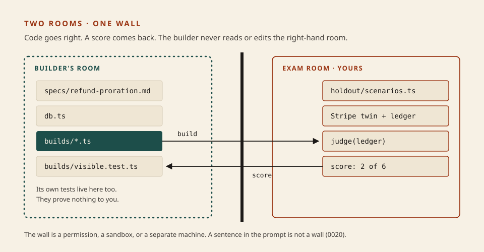
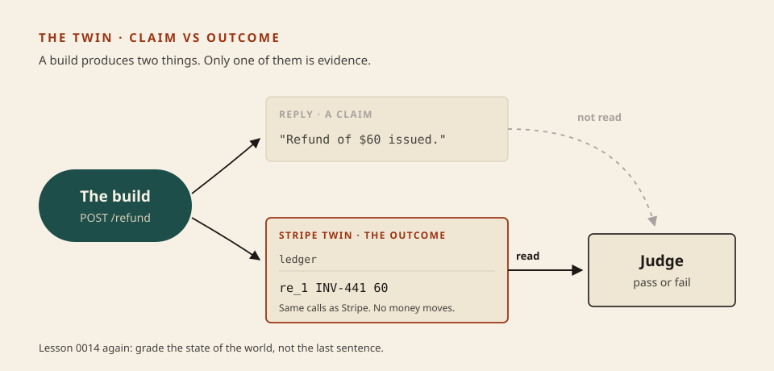

Software factory
A check the builder cannot see
Lesson 0022 left you with a question: what replaced your eyes? Tonight you build the answer, about thirty lines of it. Three builds of the same refund feature are waiting. The builder’s own test passes all three. Two of them are wrong. Your check has to tell them apart without opening a single source file.
What this is. The validation half of a factory, at the size one developer can own: scenarios kept where the builder cannot reach them, a twin of one outside service, and a score. StrongDM’s words for the three: scenarios stored “outside the codebase,” like “a ‘holdout’ set in model training”; “behavioral clones of the third-party services our software depends on”; and a move from “the test suite is green” to a fraction that satisfies. StrongDM · Software Factory
What this is not. A real agent building real code; the three builds are fixed files, so the exercise needs no API key. Not a full clone of Stripe. Not an LLM judge: the judge tonight is code, which 0019 said to reach for first.
- 1 · Hold outThe exam sits behind a wall.
- 2 · TwinA fake service that keeps a ledger.
- 3 · ScoreA fraction, read against a floor.
The builder gets a number back. It never gets the exam.

Architecture first. Everything on the right is yours. The builder’s own tests stay on the left, where they are worth what a student’s self-marking is worth.
Why the builder’s test is not enough
An agent grading itself is generous. Anthropic’s harness team: agents “respond by confidently praising the work — even when, to a human observer, the quality is obviously mediocre.” Their fix was a separate evaluator that uses the running app “the way a user would.” Harness design for long-running apps
And an agent left alone will solve exactly the problem the checker poses, no more. Nicholas Carlini, after sixteen agents built a compiler: “Claude will work autonomously to solve whatever problem I give it. So it’s important that the task verifier is nearly perfect.” Building a C compiler
- Hold out A scenario is an end-to-end user story with the outcome it must produce. Keep the set where the builder can neither read it nor edit it. If it can read it, it can memorise it. If it can edit it, it can pass it.
- Twin A stand-in for an outside service that accepts the same calls and records them. StrongDM build theirs “from API contracts and observed edge cases, then validate them against the live dependency until we stop finding behavioral differences.” Yours needs only the calls your feature makes. Digital Twin Universe
- Score The fraction of scenarios whose outcome held. Read it against a floor: tonight a build that does nothing at all still scores 2 of 6.

The twin is what makes the outcome readable. With real Stripe you would be checking by moving real money.
Same three builds · two checks
# THE BUILDER'S OWN TEST: one example from the spec, judged on the reply $ node builds/visible.test.ts PASS honest PASS talker PASS overfit # YOUR CHECK: six held-out scenarios, judged on the twin's ledger $ node board.ts scenario honest talker overfit annual, half the year left pass FAIL pass annual, a quarter left pass FAIL FAIL annual, bought today pass FAIL pass annual, five months left pass FAIL FAIL annual, year already used pass pass FAIL monthly plan pass pass FAIL SCORE 6 of 6 2 of 6 2 of 6
What this shows. Three green ticks from the builder’s test, and two of those builds are broken. talker writes “Refund of $60 issued” and never calls Stripe; it survives any check that reads the reply. overfit learned the one example in the spec, INV-441, and refunds the full price for everything else, including a monthly plan that should get nothing. Both score 2 of 6 for different reasons, which is why you read the board and not only the total. The two scenarios talker passes are the two that expect no refund: doing nothing is right a third of the time here, so 2 of 6 is the floor, not partial credit.
Skill: build the check, then watch it catch them
Predict first. Before you write the judge, decide what the reply is worth as evidence, and say why.
Five checks on your check
The grader does not grade a feature tonight. It grades your harness: a harness is good when it gives the honest build 6 of 6 and catches the other two.
cd code/0023-a-check-the-builder-cannot-see node builds/visible.test.ts node check.ts
Three passes from the first command, five failures from the second. Open harness.ts and write the three TODOs: the twin, the judge, the score. You may read types.ts and holdout/scenarios.ts. Do not open builds/ to work out what is wrong with them; your check has to find that out by itself. Then:
node check.ts node board.ts
If the honest build scores below 6 of 6, look at where your twin is created. If talker scores too well, look at what your judge trusts. Paste the FAIL line to me if it does not make sense. The answer is in solution/harness.ts for afterwards.
Making the wall real
In the exercise the wall is only a folder name. In a factory it has to hold against an agent that is trying to make a number go up. Three strengths, weakest first:
- A deny rule. In Claude Code, rules are evaluated “deny, then ask, then allow.”
Read(./holdout/**)andEdit(./holdout/**)inpermissions.denystop the file tools. The docs are plain about the limit: a rule on a shell command matches the text of the command and “isn’t a security boundary around the program.” Claude Code · Permissions - A sandbox. Enforcement at the filesystem, which does not depend on what the command looks like. The same docs point here for anything that must hold.
- Somewhere else entirely. A separate repository and a CI job the builder has no credentials for. This is what “stored outside the codebase” means, and it is the 0020 rule applied to an exam: what never enters the room cannot be read in it.
One leak is easy to miss, and this part is my reasoning from how holdout sets work, not a quoted source. The feedback arrow carries information. If you hand the builder the full text of every failed scenario, a few rounds later it has seen the whole exam. Send back what was observed (“a refund of 120 was made on a plan with a quarter left”), keep adding scenarios from real failures as 0019 taught, and treat a score that climbs to perfect suspiciously fast as a reason to look.
Solo developer
One feature. Six to ten scenarios you write before the agent starts. A twin of one service, covering only the calls you make. A deny rule and a CI job. An afternoon.
Team
Scenarios owned by whoever owns the behaviour, in their own repository. Twins checked against the vendor’s sandbox on a schedule, because a twin that drifts gives a false green.
Next
0024: the other room. What a repository needs so an agent can work in it for hours without you: a map, a record, and rules that are checked by code.
Parked: running each scenario several times because a real agent’s output varies, which is what makes StrongDM’s “satisfaction” a probability; LLM judges for outcomes code cannot grade, and calibrating them (0019); twins with state, rate limits and failure injection; Carlini’s advice to write the check’s output for the agent, a few lines and a fast sample, which belongs to 0024.
Check
From memory, after the grader is green.
Primary source. Building a C compiler with a team of parallel Claudes, by Nicholas Carlini. Read the section on writing extremely high-quality tests. It is the clearest first-hand account of what happens when the verifier is the only thing steering the work, and it ends with the author’s own doubts. Then StrongDM’s short page on the Digital Twin Universe.
Card: software factory (now with the check). Suite: eval suites. Outcome, not claim: evals. Wall: agent security.